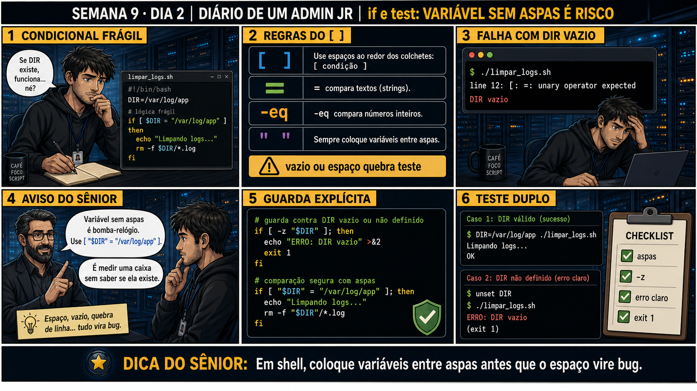

DIARIO DE UM ADMIN JR. | FASE 1 — LINUX, DO BÁSICO AO AVANÇADO
🔗 Conecta com ontem: seu primeiro script tinha shebang e variáveis, mas nenhuma
decisão automática. Hoje você aprende a fazer o script decidir sozinho — e a regra que evita o erro mais
comum de todo iniciante em bash: variável sem aspas dentro de um if.
🔓 Privilégio de hoje: escrever condicionais seguras com if e test. Você ganha o
hábito de sempre colocar variáveis entre aspas dentro de condições, evitando que espaço ou valor vazio quebre
o script.
Semana 9 · Dia 2 | Nível Júnior
Condicionais: if e test — Variável Sem Aspas é Risco
em shell, coloque variáveis entre aspas antes que o espaço vire bug
ANTES DE ALTERAR, OBSERVE. DEPOIS DE ALTERAR, VALIDE.

1. O chamado
Você escreve limpar_logs.sh com um if [ $DIR = "/var/log/app" ]
sem aspas na variável. Funciona no teste rápido — mas se DIR estiver vazio ou não definida, o
script quebra com um erro de sintaxe confuso.
💡 Passa o mouse nas palavras destacadas pra ver uma dica rápida — clica se quiser a explicação completa com analogia.
2. O sênior te conta
Terça-feira, Semana 9
Ontem você escreveu seu primeiro script — shebang, variáveis, tudo rodando de forma previsível. Hoje o
script precisa decidir sozinho, e existe uma armadilha clássica esperando bem no primeiro
if que quase todo iniciante escreve.
Escrevi um script de limpeza de logs, limpar_logs.sh, com uma condição simples:
if [ $DIR = "/var/log/app" ]. Testei rápido, com DIR já definida, e funcionou
perfeitamente. Achei que estava pronto. Coloquei num cron job, e algumas semanas depois, numa execução
onde a variável de ambiente que definia DIR não tinha sido carregada corretamente, o script
quebrou com um erro que na hora não fez sentido nenhum: unary operator expected.
Um sênior mais experiente olhou o código por cinco segundos e apontou o problema: minha variável não
tinha aspas. Quando DIR está vazia, [ $DIR = "/var/log/app" ] vira, na prática,
[ = "/var/log/app" ] — falta o primeiro operando, e o test não sabe o que fazer
com isso. Com aspas duplas, [ "$DIR" = "/var/log/app" ], o mesmo caso vazio vira
[ "" = "/var/log/app" ] — continua sintaticamente válido, mesmo que o resultado seja
falso.
Essa diferença de duas aspas foi a diferença entre um script que falha silenciosamente de forma confusa e
um que se comporta de forma previsível em qualquer cenário. Hoje você pratica exatamente essa disciplina:
aspas em toda variável dentro de condição, e guardas explícitas que checam o inesperado antes que ele
quebre o script.
3. Decodificador de conceitos
Clica em qualquer termo pra ver a definição completa e uma analogia do dia a dia:
4. Ferramentas e leitura da evidência
Elemento
O que observar e por que importa
[ "$DIR" = "valor" ]
Comparação de string segura, protegida com aspas duplas na variável.
[ -z "$DIR" ]
Testa se a variável está vazia — guarda explícita antes de usar o valor.
-eq
Comparação de números inteiros, diferente de = (que compara texto).
$ ./limpar_logs.sh
line 12: [: =: unary operator expected
DIR vazio
--- corrigido com guarda explícita ---
if [ -z "$DIR" ]; then
echo "ERRO: DIR vazio" >&2
exit 1
fi
if [ "$DIR" = "/var/log/app" ]; then
echo "Limpando logs..."
rm -f "$DIR"/*.log
fi
5. Laboratório guiado — pegue na mão, comando por comando
Segurança: execute os testes apenas em VM descartável e confirme nomes de discos, hosts e arquivos antes de cada comando.
Ação: escreva um if usando uma variável SEM aspas, e teste com a variável vazia — reproduza o bug da história.
$ cat > teste.sh << 'EOF'
#!/bin/bash
if [ $DIR = "/var/log/app" ]; then
echo "Limpando..."
fi
EOF
$ chmod +x teste.sh
$ unset DIR
$ ./teste.sh
Resultado esperado: erro "unary operator expected", reproduzindo exatamente o bug da história de hoje.
Por que fizemos isso: ver o erro acontecer de propósito, com uma variável que você mesmo deixou vazia, é o que fixa a causa raiz — não é abstrato, é reproduzível.
Cilada comum: testar só com a variável já definida (como eu fiz na história) e nunca descobrir o bug até ele acontecer em produção, com a variável vazia por algum motivo inesperado.
Ação: corrija adicionando aspas duplas na variável e teste de novo com valor vazio.
$ sed -i 's/\[ \$DIR/[ "\$DIR"/' teste.sh
$ unset DIR
$ ./teste.sh
Resultado esperado: nenhum erro de sintaxe — a condição é avaliada corretamente como falsa (silenciosa), sem quebrar o script.
Por que fizemos isso: essa é a correção exata de duas aspas que resolveu o mistério da história — sentir a diferença entre quebrar e simplesmente avaliar como falso.
Cilada comum: colocar aspas só na variável e esquecer do outro lado da comparação — o padrão seguro é aspas nos dois operandos sempre que houver risco de espaço ou caractere especial.
Ação: adicione uma guarda com -z no início, testando o caso de variável vazia com mensagem clara.
$ sed -i '2i if [ -z "$DIR" ]; then echo "ERRO: DIR vazio" >&2; exit 1; fi' teste.sh
$ unset DIR
$ ./teste.sh; echo "exit code: $?"
Resultado esperado: mensagem "ERRO: DIR vazio" e exit code 1, em vez de silêncio ou erro de sintaxe confuso.
Por que fizemos isso: a guarda explícita é o que transforma "falha silenciosa" em "falha clara e controlada" — exatamente a diferença que separa um script frágil de um profissional.
Cilada comum: confiar só nas aspas sem adicionar a guarda -z — aspas evitam a quebra de sintaxe, mas sem a guarda o script pode continuar rodando silenciosamente com um valor vazio que não deveria ser aceito.
🧑🏫 Aqui entra o Mentor (em breve): se uma condição continuar se comportando de forma inesperada mesmo com aspas, este é o ponto onde o chat com o Sênior-IA vai ajudar a debugar.
Ação: teste a diferença entre = e -eq comparando "18" com "018" nos dois modos.
Resultado esperado: "diferente (string)" no primeiro teste, "igual (numero)" no segundo — resultados opostos, confirmando a distinção.
Por que fizemos isso: ver os dois operadores discordarem no mesmo par de valores é a prova mais direta de que = e -eq não são intercambiáveis — é exatamente o que a Questão 3 vai testar.
Cilada comum: usar = pra comparar números "porque funcionou nos testes simples" — casos com zeros à esquerda (018) ou espaços revelam a diferença real, que passa despercebida em testes rasos.
Ação: documente script antes/depois da correção, casos testados, comportamento validado.
# anote no seu diário de bordo:
Antes: if [ $DIR = "/var/log/app" ] -> quebrava com DIR vazio
Depois: guarda -z + aspas duplas -> falha clara com exit 1
Testado: DIR válida (funciona), DIR vazia (erro claro), = vs -eq (diferença confirmada)
Resultado esperado: registro completo reproduzindo o painel 6 da prancha de hoje.
Por que fizemos isso: documentar o antes/depois é o que prova que a correção realmente resolveu o problema original, não só "parece melhor".
Cilada comum: documentar só o script final, sem registrar os casos de teste — sem isso, fica impossível confirmar depois que a correção cobre exatamente os cenários que quebravam antes.
6. Antes de ver as opções — tenta responder
🧠 Recall ativo: por que if [ $DIR = "/var/log/app" ] quebra quando
DIR está vazia?
Sem aspas,
se DIR estiver vazia, o
test (representado por
[ ]) vê [ = "/var/log/app" ] — faltando o primeiro operando, o que gera
unary operator expected. Com aspas, [ "" = "/var/log/app" ] continua
sintaticamente válido, mesmo vazio.
QUESTÃO 1 de 3
7. Questão comentada — clica numa alternativa
Seu script quebra com "unary operator expected" quando a variável DIR está vazia.
Qual é a correção correta?
💡 Analogia do Sênior para Fixar: A estrutura 'if [ -f arquivo ]' é a cancela da ferrovia: verifica se o arquivo realmente existe e é válido antes de autorizar o trem do script a passar.
QUESTÃO 2 de 3 — cenário de erro real
7.1 Com a guarda -z adicionada, DIR="/var/log/app" funciona e DIR vazio dá erro claro — isso é suficiente?
Testando os dois casos: DIR=/var/log/app ./limpar_logs.sh funciona normalmente;
unset DIR; ./limpar_logs.sh mostra ERRO: DIR vazio e sai com código 1.
Esse comportamento representa uma correção completa e profissional?
💡 Analogia do Sênior para Fixar: A comparação de strings com '[ "$A" = "$B" ]' com aspas duplas é o cinto de segurança: evita que o script quebre com erro de sintaxe se a variável estiver vazia.
QUESTÃO 3 de 3 — detalhe que confunde todo iniciante
7.2 "= e -eq fazem a mesma comparação, só muda a sintaxe?"
Um colega usa [ "$IDADE" = 18 ] pra comparar um número, achando que = e
-eq são intercambiáveis.
Existe diferença real entre os dois?
💡 Analogia do Sênior para Fixar: O bloco 'if / elif / else' é o fluxograma de decisões da portaria: se for funcionário entra, se for visitante cadastra, se não for nenhum dos dois barra na entrada.
8. Procedimento profissional
Sempre coloque variáveis entre aspas duplas dentro de condições.
Use -z pra checar se uma variável está vazia antes de usá-la.
Use = pra comparar texto, -eq pra comparar números inteiros.
Teste o script com valores válidos, vazios e inesperados.
Falhe com mensagem clara e exit code diferente de zero quando algo estiver errado.
Prevenção
Adote shellcheck (linter de bash) no fluxo de trabalho da equipe — ele detecta
automaticamente variáveis sem aspas dentro de condições, exatamente o tipo de bug que a história de hoje
descreve, antes mesmo do script chegar em produção.
9. Validação e encerramento
Todas as variáveis dentro de condições estão entre aspas duplas.
Guardas explícitas (-z) protegem contra valores vazios ou não definidos.
= e -eq são usados corretamente conforme o tipo de comparação.
O script foi testado com valores válidos, vazios e inesperados.
Rollback e limites
Adicionar aspas e guardas não é destrutivo — não existe rollback necessário. O
risco real é justamente NÃO fazer essas correções, deixando o script vulnerável a quebrar com dados
inesperados em produção.
💡 Sobre repetição espaçada: "proteja contra o inesperado antes que aconteça"
conecta com --dry-run do rsync (Semana 6) e com o ritual de rm (Semana 2) — sempre pensar no caso que pode
dar errado antes que ele aconteça de verdade. O Anki vai conectar os três.
10. Resposta final
Alternativa correta: A. Nesta aula, a decisão correta foi usar
aspas duplas ao redor da variável: if [ "$DIR" = "/var/log/app" ]. O ponto central do caso é este:
em shell, coloque variáveis entre aspas antes que o espaço vire bug.
🔓 O que você desbloqueou hoje
Capacidade de escrever condicionais seguras que não quebram com valores
inesperados. Amanhã você aprende loops — e por que rodar um dry-run antes de qualquer loop destrutivo é
obrigatório, não opcional.